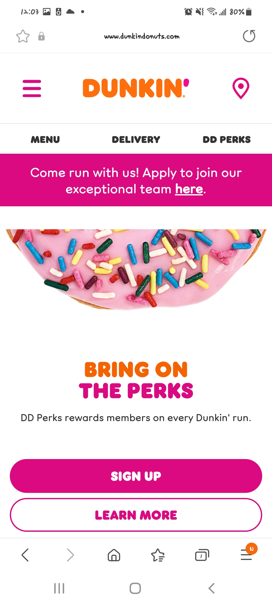
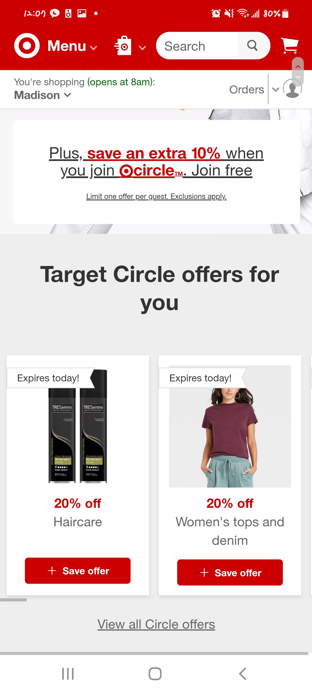

Design Principles Document
Moon Moon
PARC:Proximity
The logo is large and prominent in google news, contributing effectively to the branding of websites. The closest object to the logo is the horizontal navigation bar below. The bar is white and it contrasts with the logo. This is an good exmple because white and navy color are well contrasted.
PARC:Contrast
Dunkin website is using contrast to get out attention on spacecraft. The colors used on the website are clear and well contrasted.
PARC:Repetition
Target is using repetition. It highlights sales of different colors of fonts and attaches photos related to advertisements. Overall, they go well with the theme and color of the website.